| Asignatura: | Desarrollo de Aplicaciones Móviles Nativas |
| Práctica: | Práctica 12 |
| Alumno: | Angel Frausto Robles |
| Grupo: | 7CM4 |
| Fecha: | 8 de noviembre de 2026 |
Android permite capturar fotografías desde una aplicación con la API android.hardware.camera2 o, de forma más sencilla, lanzando un Intent con la acción MediaStore.ACTION_IMAGE_CAPTURE, de modo que la aplicación de cámara del sistema toma la foto y la devuelve. La clase android.hardware.Camera está obsoleta.
Objetivos:
misfotos (Ejemplo 1).RadioButton: vista previa, imagen completa o foto de la galería (Ejemplo 2).Un solo proyecto, Camara, con un menú (MainActivity) que abre las tres pantallas: Ejemplo1Activity y Ejemplo2Activity en Java, y CamaraComposeActivity en Kotlin con Compose. Se ejecutó en el emulador de Android Studio (API 36) y se compiló con minSdk 29. Cada pantalla lleva mi nombre como encabezado para identificar las capturas.
Uri.fromFile() y la carpeta pública de Environment.getExternalStoragePublicDirectory ya no se pueden entregar a la app de cámara (provocan FileUriExposedException y el almacenamiento está restringido). En su lugar se crea la foto con MediaStore (Pictures/misfotos) y se pasa ese Uri en EXTRA_OUTPUT. Así la foto aparece en la Galería y no hace falta WRITE_EXTERNAL_STORAGE.CAMERA: al usar el Intent la app de cámara del sistema es quien lo necesita. Si se declara sin solicitarlo en tiempo de ejecución, el Intent falla con SecurityException.yyyymmddhhmmss de la guía usa mm (minutos) en lugar de MM (mes); se corrigió a yyyyMMddHHmmss.ACTION_GET_CONTENT con tipo image/* en lugar de ACTION_PICK con INTERNAL_CONTENT_URI, que ya no muestra la galería. Las imágenes se leen con ImageDecoder, que las reduce y respeta la rotación.Reúne lo que comparten los ejemplos: crear la entrada de la foto en Pictures/misfotos, borrarla si se cancela la cámara y leer una imagen reducida.
package com.example.camara;
import android.content.ContentResolver;
import android.content.ContentValues;
import android.content.Context;
import android.graphics.Bitmap;
import android.graphics.ImageDecoder;
import android.net.Uri;
import android.os.Environment;
import android.provider.MediaStore;
import java.io.IOException;
import java.text.SimpleDateFormat;
import java.util.Date;
import java.util.Locale;
/** Utilidades compartidas por los ejemplos: crear la foto en la galería y leer imágenes. */
final class Fotos {
private Fotos() {}
/**
* Crea una entrada vacía en Pictures/misfotos (visible en la Galería) y devuelve su Uri.
* La app de cámara escribe en ese Uri (EXTRA_OUTPUT). En API 29+ no pide permisos.
*/
static Uri nueva(Context c) {
ContentValues v = new ContentValues();
v.put(MediaStore.Images.Media.DISPLAY_NAME, codigo() + ".jpg");
v.put(MediaStore.Images.Media.MIME_TYPE, "image/jpeg");
v.put(MediaStore.Images.Media.RELATIVE_PATH, Environment.DIRECTORY_PICTURES + "/misfotos");
return c.getContentResolver().insert(MediaStore.Images.Media.EXTERNAL_CONTENT_URI, v);
}
/** Borra la entrada creada con nueva() cuando el usuario cancela la cámara. */
static void descartar(Context c, Uri uri) {
if (uri != null) c.getContentResolver().delete(uri, null, null);
}
/** Decodifica el Uri reduciendo el tamaño (máx. ~1024 px) y respetando la rotación EXIF. */
static Bitmap leer(ContentResolver cr, Uri uri) throws IOException {
ImageDecoder.Source fuente = ImageDecoder.createSource(cr, uri);
return ImageDecoder.decodeBitmap(fuente, (decoder, info, src) -> {
int lado = Math.max(info.getSize().getWidth(), info.getSize().getHeight());
decoder.setTargetSampleSize(Math.max(1, lado / 1024));
decoder.setMutableRequired(false);
});
}
/** Nombre pic_AAAAMMDDHHMMSS (en la guía el patrón usa mm = minutos en lugar de MM = mes). */
static String codigo() {
return "pic_" + new SimpleDateFormat("yyyyMMddHHmmss", Locale.getDefault()).format(new Date());
}
}
Al pulsar el botón se crea la foto vacía en la galería, se lanza el Intent con EXTRA_OUTPUT y, en onActivityResult, si el resultado es RESULT_OK se muestra la foto; si se cancela, se borra la entrada vacía.
package com.example.camara;
import android.app.Activity;
import android.content.Intent;
import android.net.Uri;
import android.os.Bundle;
import android.provider.MediaStore;
import android.util.Log;
import android.view.View;
import android.widget.Button;
import android.widget.ImageView;
import android.widget.TextView;
import android.widget.Toast;
import java.io.IOException;
/** Ejemplo 1: toma una foto con el Intent de la cámara y la guarda en Pictures/misfotos. */
public class Ejemplo1Activity extends Activity {
private Button jbn;
private Uri foto;
@Override
protected void onCreate(Bundle b) {
super.onCreate(b);
setContentView(R.layout.activity_ejemplo1);
jbn = (Button) findViewById(R.id.xbn);
jbn.setOnClickListener(new View.OnClickListener() {
@Override
public void onClick(View v) {
foto = Fotos.nueva(Ejemplo1Activity.this);
Intent in = new Intent(MediaStore.ACTION_IMAGE_CAPTURE);
in.putExtra(MediaStore.EXTRA_OUTPUT, foto);
startActivityForResult(in, 0);
}
});
}
@Override
protected void onActivityResult(int requestCode, int resultCode, Intent data) {
super.onActivityResult(requestCode, resultCode, data);
TextView estado = (TextView) findViewById(R.id.tvEstado);
if (resultCode == RESULT_OK && foto != null) {
try {
((ImageView) findViewById(R.id.ivFoto)).setImageBitmap(
Fotos.leer(getContentResolver(), foto));
estado.setText("Foto guardada en Pictures/misfotos:\n" + foto);
Toast.makeText(this, "Foto guardada", Toast.LENGTH_SHORT).show();
} catch (IOException ex) {
Log.e("Error", "Error:" + ex);
estado.setText("No se pudo leer la foto.");
}
} else {
Fotos.descartar(this, foto);
estado.setText("No se tomó la foto.");
}
}
}
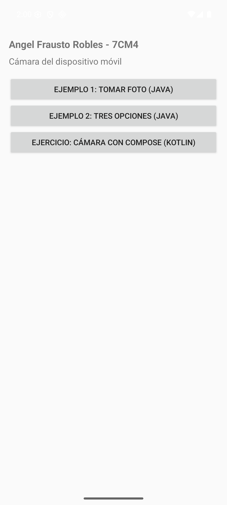
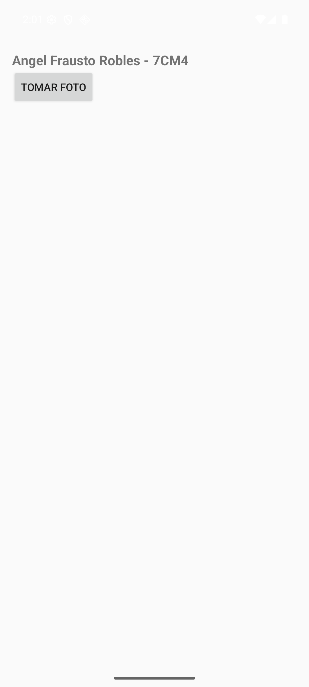
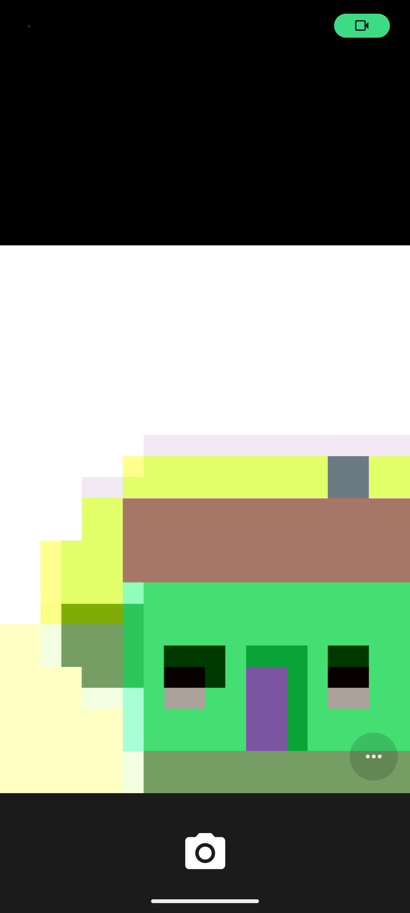
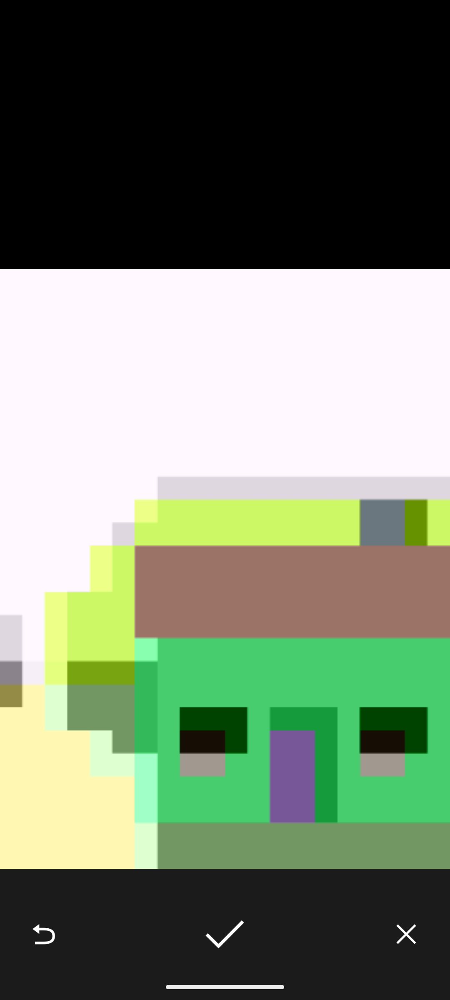
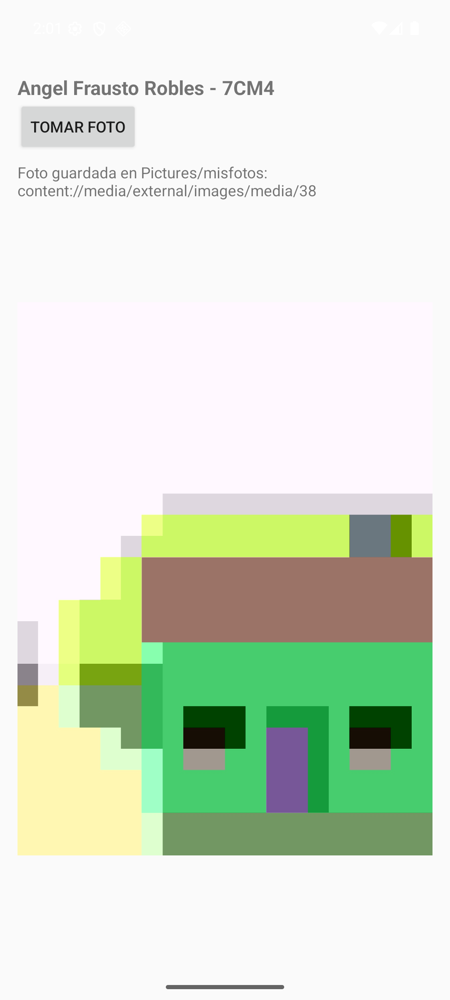
Para verificar que la foto se guardó en la carpeta misfotos, se listó el directorio con adb shell ls -l /sdcard/Pictures/misfotos:
total 76 -rwxrwx--- 1 u0_a193 media_rw 72968 2026-11-09 02:01 pic_20261109020103.jpg
Un RadioGroup con tres opciones decide qué Intent se lanza. Con la vista previa la cámara devuelve una miniatura en el extra data; con la imagen completa la cámara escribe en el Uri indicado; con la galería el selector del sistema devuelve el Uri de la imagen elegida.
package com.example.camara;
import android.app.Activity;
import android.content.Intent;
import android.graphics.Bitmap;
import android.net.Uri;
import android.os.Bundle;
import android.provider.MediaStore;
import android.view.View;
import android.view.View.OnClickListener;
import android.widget.Button;
import android.widget.ImageView;
import android.widget.RadioButton;
import android.widget.Toast;
import java.io.IOException;
/** Ejemplo 2: vista previa, imagen completa o foto elegida de la galería. */
public class Ejemplo2Activity extends Activity {
Button jbn;
RadioButton jrb0, jrb1, jrb2;
Intent i;
int TAKE_PREVIEW = 0;
int TAKE_PICTURE = 1;
int SELECT_PICTURE = 2;
Uri foto;
@Override
public void onCreate(Bundle b) {
super.onCreate(b);
setContentView(R.layout.activity_ejemplo2);
jbn = (Button) findViewById(R.id.xbn1);
jrb0 = (RadioButton) findViewById(R.id.xrb0);
jrb1 = (RadioButton) findViewById(R.id.xrb1);
jrb2 = (RadioButton) findViewById(R.id.xrb2);
jbn.setOnClickListener(new OnClickListener() {
@Override
public void onClick(View v) {
i = new Intent(MediaStore.ACTION_IMAGE_CAPTURE);
int code = TAKE_PREVIEW;
if (jrb1.isChecked()) {
foto = Fotos.nueva(Ejemplo2Activity.this);
i.putExtra(MediaStore.EXTRA_OUTPUT, foto);
code = TAKE_PICTURE;
} else if (jrb2.isChecked()) {
// ACTION_PICK con INTERNAL_CONTENT_URI (guía) ya no muestra la galería.
i = new Intent(Intent.ACTION_GET_CONTENT);
i.setType("image/*");
code = SELECT_PICTURE;
}
startActivityForResult(i, code);
}
});
}
@Override
protected void onActivityResult(int requestCode, int resultCode, Intent data) {
super.onActivityResult(requestCode, resultCode, data);
if (resultCode != RESULT_OK) {
if (requestCode == TAKE_PICTURE) Fotos.descartar(this, foto);
return;
}
ImageView iv = (ImageView) findViewById(R.id.xiv1);
try {
if (requestCode == TAKE_PREVIEW) {
if (data != null && data.hasExtra("data")) {
iv.setImageBitmap((Bitmap) data.getParcelableExtra("data"));
} else {
Toast.makeText(this, "La cámara no devolvió vista previa", Toast.LENGTH_SHORT).show();
}
} else if (requestCode == TAKE_PICTURE) {
iv.setImageBitmap(Fotos.leer(getContentResolver(), foto));
} else if (requestCode == SELECT_PICTURE && data != null) {
iv.setImageBitmap(Fotos.leer(getContentResolver(), data.getData()));
}
} catch (IOException e) {
Toast.makeText(this, "No se pudo abrir la imagen", Toast.LENGTH_SHORT).show();
}
}
}
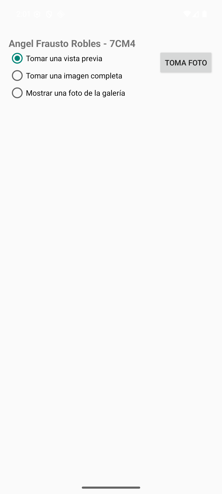
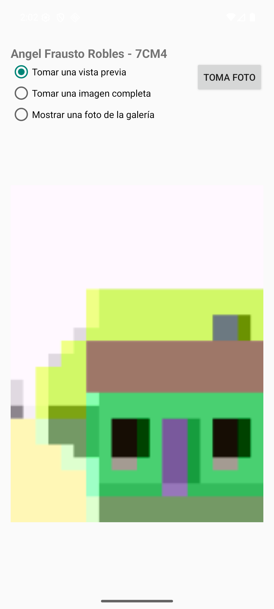
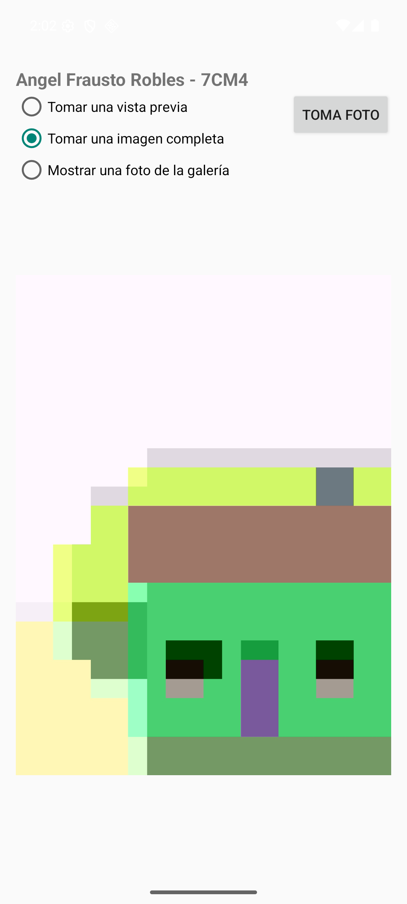
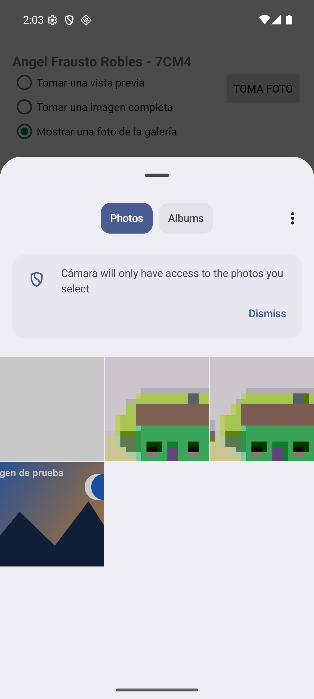
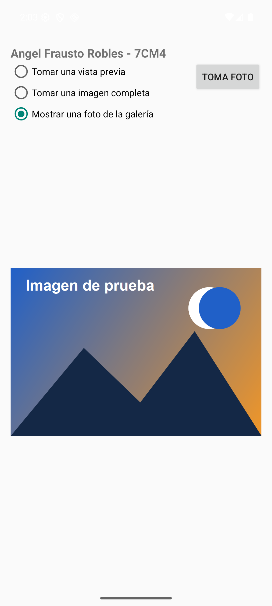
El Ejemplo 2 se reescribió con Compose. Cada Intent se sustituye por un contrato de resultado registrado con rememberLauncherForActivityResult: TakePicturePreview (vista previa), TakePicture (imagen completa) y GetContent (galería). El estado (opción elegida, imagen y mensaje) vive en variables remember, y la interfaz se redibuja sola cuando cambian.
package com.example.camara
import android.graphics.Bitmap
import android.graphics.ImageDecoder
import android.net.Uri
import android.os.Bundle
import androidx.activity.ComponentActivity
import androidx.activity.compose.rememberLauncherForActivityResult
import androidx.activity.compose.setContent
import androidx.activity.result.contract.ActivityResultContracts
import androidx.compose.foundation.Image
import androidx.compose.foundation.layout.Arrangement
import androidx.compose.foundation.layout.Column
import androidx.compose.foundation.layout.Row
import androidx.compose.foundation.layout.fillMaxSize
import androidx.compose.foundation.layout.fillMaxWidth
import androidx.compose.foundation.layout.padding
import androidx.compose.foundation.layout.systemBarsPadding
import androidx.compose.material3.Button
import androidx.compose.material3.MaterialTheme
import androidx.compose.material3.RadioButton
import androidx.compose.material3.Text
import androidx.compose.runtime.Composable
import androidx.compose.runtime.getValue
import androidx.compose.runtime.mutableIntStateOf
import androidx.compose.runtime.mutableStateOf
import androidx.compose.runtime.remember
import androidx.compose.runtime.setValue
import androidx.compose.ui.Alignment
import androidx.compose.ui.Modifier
import androidx.compose.ui.graphics.asImageBitmap
import androidx.compose.ui.platform.LocalContext
import androidx.compose.ui.res.stringResource
import androidx.compose.ui.text.font.FontWeight
import androidx.compose.ui.unit.dp
import androidx.compose.ui.unit.sp
/** Ejercicio: el Ejemplo 2 (vista previa / imagen completa / galería) con Jetpack Compose. */
class CamaraComposeActivity : ComponentActivity() {
override fun onCreate(savedInstanceState: Bundle?) {
super.onCreate(savedInstanceState)
setContent { MaterialTheme { PantallaCamara() } }
}
}
@Composable
fun PantallaCamara() {
val contexto = LocalContext.current
val resolver = contexto.contentResolver
val opciones = listOf(
stringResource(R.string.op_preview),
stringResource(R.string.op_completa),
stringResource(R.string.op_galeria)
)
var opcion by remember { mutableIntStateOf(0) }
var imagen by remember { mutableStateOf<Bitmap?>(null) }
var mensaje by remember { mutableStateOf("") }
var foto by remember { mutableStateOf<Uri?>(null) }
fun leer(uri: Uri): Bitmap = ImageDecoder.decodeBitmap(ImageDecoder.createSource(resolver, uri)) { d, info, _ ->
d.setTargetSampleSize(maxOf(1, maxOf(info.size.width, info.size.height) / 1024))
}
// Vista previa: la cámara devuelve una miniatura (Bitmap).
val vistaPrevia = rememberLauncherForActivityResult(ActivityResultContracts.TakePicturePreview()) { bmp ->
if (bmp != null) { imagen = bmp; mensaje = "Vista previa" }
else mensaje = "La cámara no devolvió vista previa"
}
// Imagen completa: la cámara escribe en el Uri indicado (Pictures/misfotos).
val completa = rememberLauncherForActivityResult(ActivityResultContracts.TakePicture()) { guardada ->
val uri = foto
if (guardada && uri != null) { imagen = leer(uri); mensaje = "Imagen completa: $uri" }
else { uri?.let { resolver.delete(it, null, null) }; mensaje = "No se tomó la foto" }
}
// Galería: el selector del sistema devuelve un Uri.
val galeria = rememberLauncherForActivityResult(ActivityResultContracts.GetContent()) { uri ->
if (uri != null) { imagen = leer(uri); mensaje = "Foto de la galería" }
}
Column(Modifier.fillMaxSize().systemBarsPadding().padding(16.dp)) {
Text(stringResource(R.string.nombre_alumno), fontSize = 18.sp, fontWeight = FontWeight.Bold)
Row(Modifier.fillMaxWidth(), horizontalArrangement = Arrangement.SpaceBetween) {
Column(Modifier.weight(1f)) {
opciones.forEachIndexed { i, texto ->
Row(verticalAlignment = Alignment.CenterVertically) {
RadioButton(selected = opcion == i, onClick = { opcion = i })
Text(texto)
}
}
}
Button(onClick = {
when (opcion) {
0 -> vistaPrevia.launch(null)
1 -> { foto = Fotos.nueva(contexto); completa.launch(foto!!) }
else -> galeria.launch("image/*")
}
}) { Text(stringResource(R.string.toma_foto), maxLines = 1) }
}
Text(mensaje, Modifier.padding(vertical = 8.dp))
imagen?.let { Image(it.asImageBitmap(), contentDescription = "Foto", Modifier.fillMaxWidth()) }
}
}
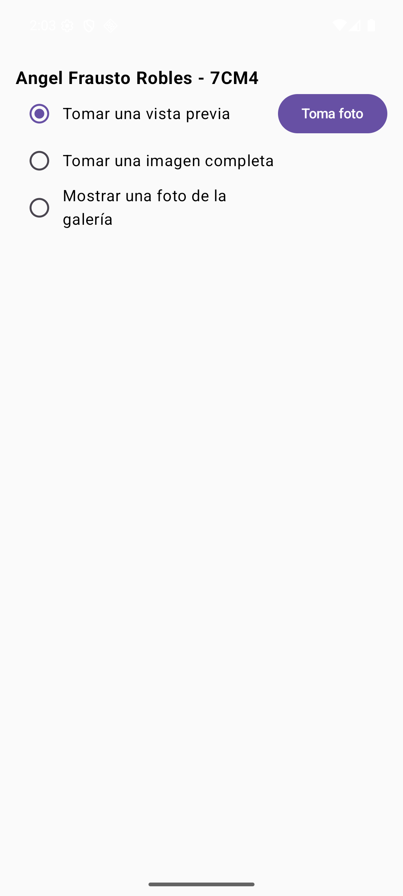
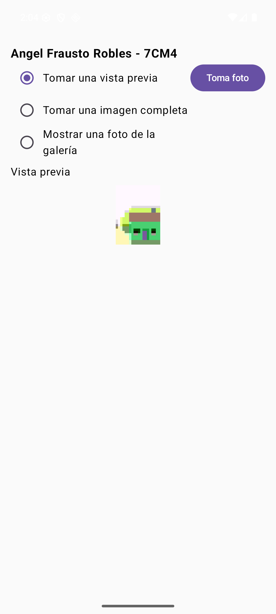
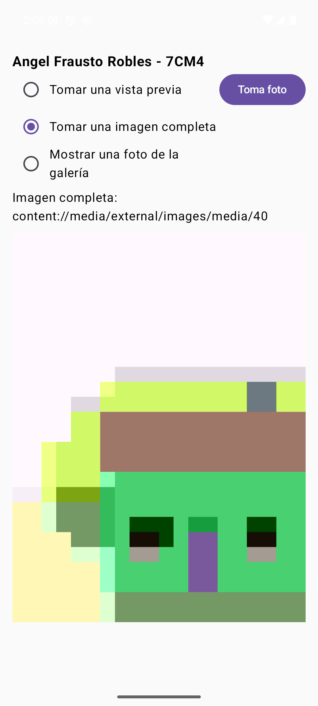
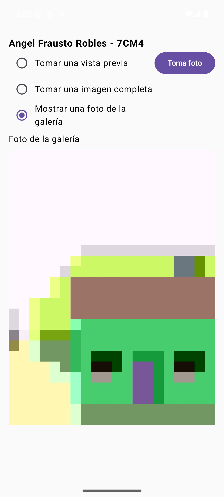
El Intent de la cámara es la forma más corta de tomar fotos: la aplicación no maneja el lente ni pide el permiso de cámara, y solo recibe el resultado. Lo que más cambió respecto al material de la guía es el almacenamiento: con MediaStore la foto queda en la Galería sin permisos especiales. La vista previa devuelve solo una miniatura, y para obtener la foto en su resolución real hay que indicar dónde guardarla. Con Compose el mismo programa quedó más corto, porque los contratos de resultado reemplazan a startActivityForResult y onActivityResult, y el estado actualiza la pantalla sin escribir findViewById.